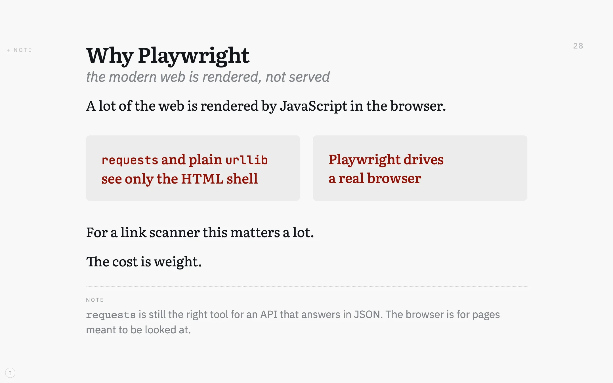
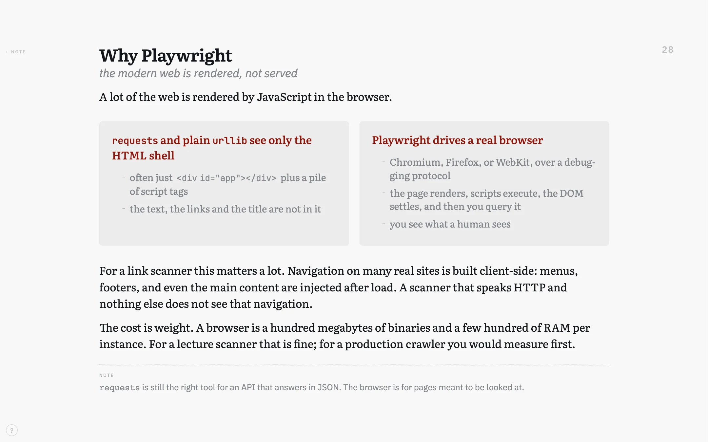
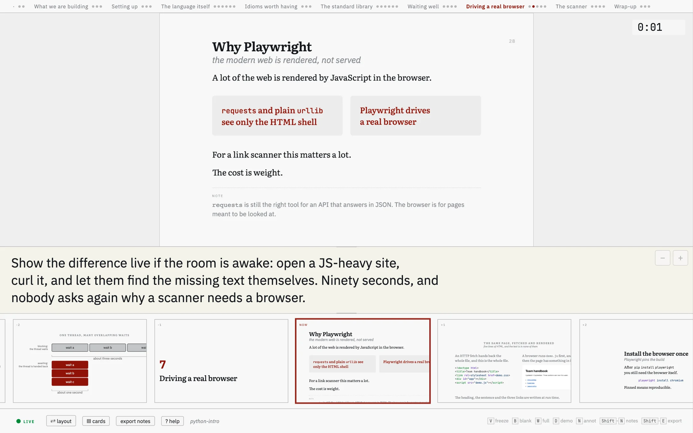
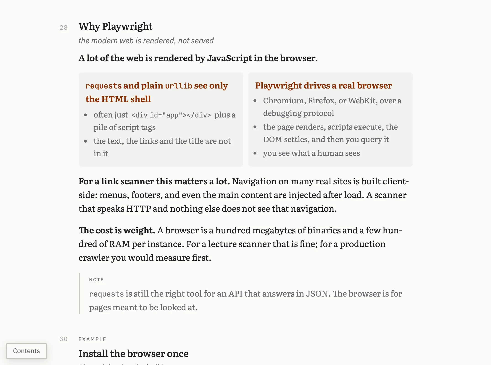
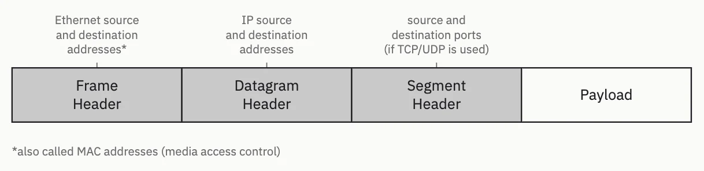

psi-slides · presentation software for lecturers · Diese Seite auf Deutsch
Write the lecture once.
From one Markdown file you get the slides the room sees, a cockpit for your own screen and two handouts for the students. All four are built from that one file, so they cannot drift apart.
No terminal needed: download the app, choose New lecture…, and a first lecture is there to change. Or see one first: the tutorial, a lecture about writing lectures.


One slide of a real lecture, twice. Once as the room sees it, and once with the same text in full. One keypress separates them.
Flip the switch in the second picture’s title bar and the full text becomes the printed handout – a different file, built from the same source. Click any picture on this page to see it at full size.
The one-minute version
The argument on this page as a film: what a lecture is made of, what comes out of one file, and what the hour in front of the room looks like. Subtitled. Auch auf Deutsch.
The video loads only when you press play, from a server of our research group at the University of Bamberg. Nothing else on the site’s pages comes from another server.
A lecture holds three kinds of text
What goes on the slide has to read from the back row. The script – the sentences that do the explaining – belongs in a handout. And the notes to yourself belong on your own screen and nowhere else. Slide software offers two places for these three texts: the slide, and the notes field under it. Below are two common ways to fit them in, and the one psi-slides takes.
not ideal: everything on the slides
The script goes onto the slides, so the slides fill up. By the third bullet the back row has stopped reading them, and there is still nothing to hand out afterwards.
This is death by PowerPoint, and it is what happens when a lecture has one place to put three texts.
also not ideal: slides and a script
Sparse slides, and the argument in a second document beside them. That works until you edit one of the two, which is usually the same afternoon.
From then on the handout describes a lecture you no longer give, and your notes to yourself still have nowhere to live.
our approach
Write each paragraph once, and mark the one sentence that carries it. The projection, the slides on the wall, takes that sentence. The handout takes the whole paragraph. The lines you start with > note: stay on your own screen.
The three texts live in one file, so they cannot fall out of step.
This listing is the slide’s entire source
Thirty-one lines of Markdown, no editor and no template. A chunk is one heading with the text under it, and a chunk becomes one slide. The lecture the slide comes from is real: an introduction to Python in 39 chunks.
Open the lectures yourself
These are the tool, not a video of it. Move with the arrow keys, press C to switch between the shortened text and the full text, O to see the whole lecture at once, / to search, and ? to list the keys.
Start here: the tutorial
61 slides · the basics
A lecture about writing lectures: how the format works, shown in a lecture built with it. It ends by handing over to the figures and decoration lectures below. Its source is the model to write your own lecture against.
A real lecture: python-intro
39 slides · about 25 minutes
The lecture the slide at the top of this page comes from: an introduction to Python for people who have written some code before. Open the projection and press C to see the same slide shortened and then in full.
The other three lectures
The tutorial and python-intro are the two above; these are the rest. Of Decoration, two of the four views are published here.
Short example 6 slides · German
One section of a first-year networking lecture. Eighty-odd lines of Markdown, short enough to read end to end beside what it produces.
Figures 47 slides
Every construction the figure language has, drawn rather than described, starting with the language in five lines and with figures from a real course among them.
Decoration 54 slides
What puts something other than a text column on a slide: title slides and their credit lines, dividers, cards, backdrops, a photograph that opens as you press Space, and type and colour.
Each of a lecture’s four files carries its own styling, scripts, images, typeset maths and typefaces. Copied to a USB stick or sent by mail, it opens from a folder on disk as it does from this server, and apart from an embedded online video it needs no network connection.
A cockpit opened from a link above shows the layout but does not follow a projection – press S inside a projection to open one that does. The four links on each card open the four files of that lecture, exactly as psi-slides writes them.
The hour in front of the room
The projection goes on the wall, the cockpit on your laptop, and the two keep each other in step in the browser, with no server between them. Your note, what is coming, a clock, a way back to slide forty, and a box you can type into that the room reads along with.
In the room walks through the hour itself: what you do at each point of it, and the key you do it with.

What the students take away
The same source, typeset as a document: hyphenated, at a line length made for reading, with the margin note as an aside.
There are two such documents, and you see them both with the
switch in the title bar. print.html carries the script alone and is the one
to hand out. print-notes.html folds your speaker notes in under
each chunk and stays with you. On request psi-slides also writes both as A4
PDFs, and the slides as one PDF.
Opened in a browser, both documents have tools for reading on screen. A contents list down the side marks where the reader is. Students can highlight words, code, a formula or a figure, add a note to each highlight, and step through them with n and p. The highlights stay in the student’s browser; they export to a Markdown file the student can send you, and they print in yellow with the notes in the margin.

A slide is a frame, not only a column of text
You pick what a slide is made of in one line of the source, and the text of the slide stays as it was written: a title slide, the divider that opens each part, a row of cards, a photograph the words stand on, a list that stays at the edge of the frame for a whole part.
A slide is a frame shows the lot: ten ways to open a lecture, six dividers, and the difference between something laid over the slide and something the slide makes room for.

A figure is text too
A figure drawn in a program of its own leaves a second file to keep in step, and that is the one that goes out of date. psi-slides has a small language for figures instead: a figure is a few lines in the same file as the slide it sits on.
Only the first box in this figure has a position of its own. The others are placed against a box that is already there, so moving one box moves what is attached to it – and the figure can be built up in front of the room a step at a time.

Figures you write is the case for the figure language, then the manual: one figure built a line at a time, and every statement. It also shows the graphical editor, in which you drag a box on the live slide and the source is rewritten.
Where to read further
- Getting started The app for macOS, Windows and Linux, the command line, and a first lecture of your own.
- How psi-slides compares Beamer, reveal.js, Quarto, Marp, Slidev, PowerPoint and friends, in both directions, including where psi-slides loses.
- Figures you write The case for the figure language, then the manual: one figure built a line at a time, and every statement.
- The tutorial lecture The format shown working rather than described, with its source beside it.
- The repository The README explains the format and says what the tool is good at and what it is not good at.